Space Economy
From launchpads to satellites, a vibrant world of exploration and orbital industry.
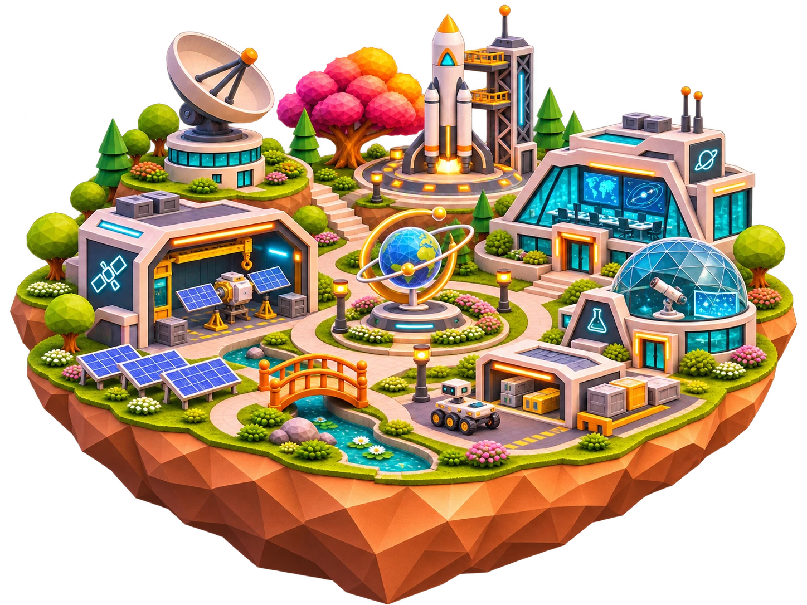

Travel, Hospitality & Tourism
A welcoming escape of coastal stays, shared tables and journeys of discovery.

Future of Work & Emerging Industries
New ways of working take shape through collaboration, immersive learning and emerging industries.

Government & Public Services
A welcoming civic district shaped around public service, safety, justice and community.
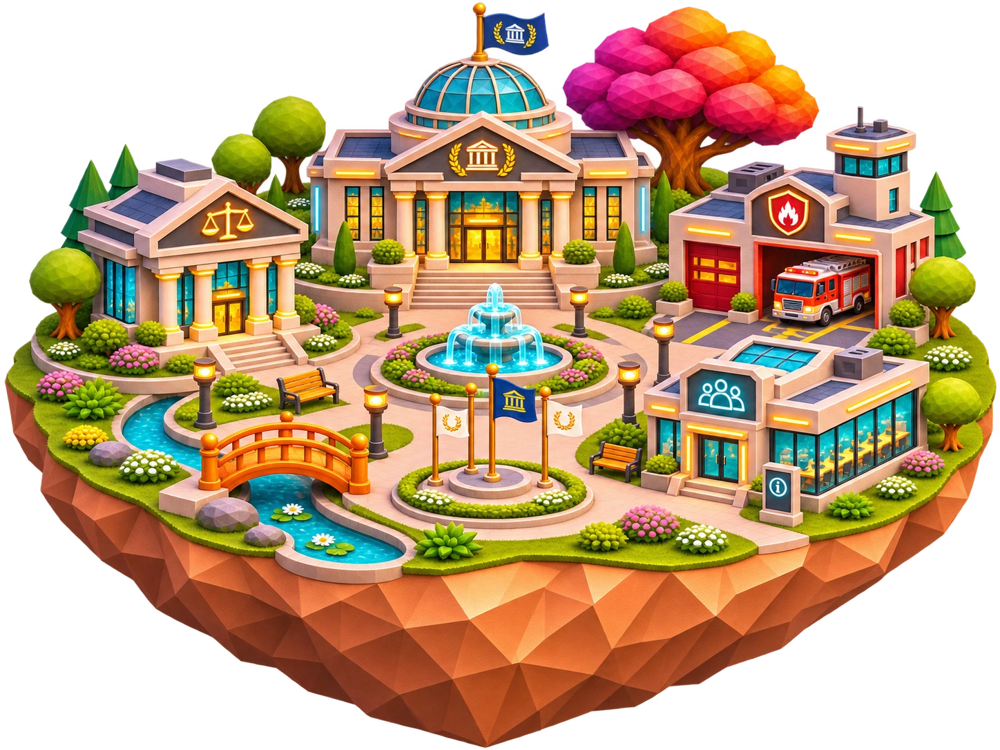

Construction & Real Estate
From blueprints to welcoming neighborhoods, a world of building, design and places to call home.

Arts, Culture & Heritage
Living traditions and new expressions meet across museums, workshops and cultural spaces.
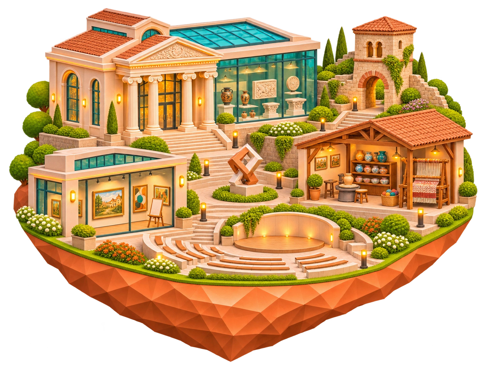
Transportation, Mobility & Logistics
Connected journeys by air, rail, road and sea, bringing people, places and goods together.

Wellness, Fitness & Sports
A world in motion, connecting fitness, sport and quieter moments of wellbeing.

Financial Services
A connected district of banking, markets, payments and investment, built around the services that keep money moving.
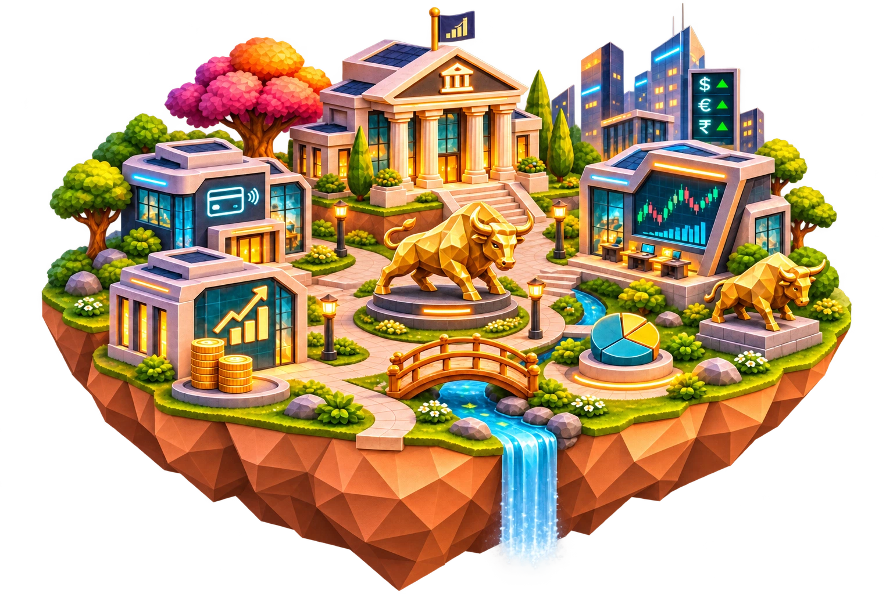

Technology
A world of ideas taking shape through computing, electronics, and hands-on robotics.
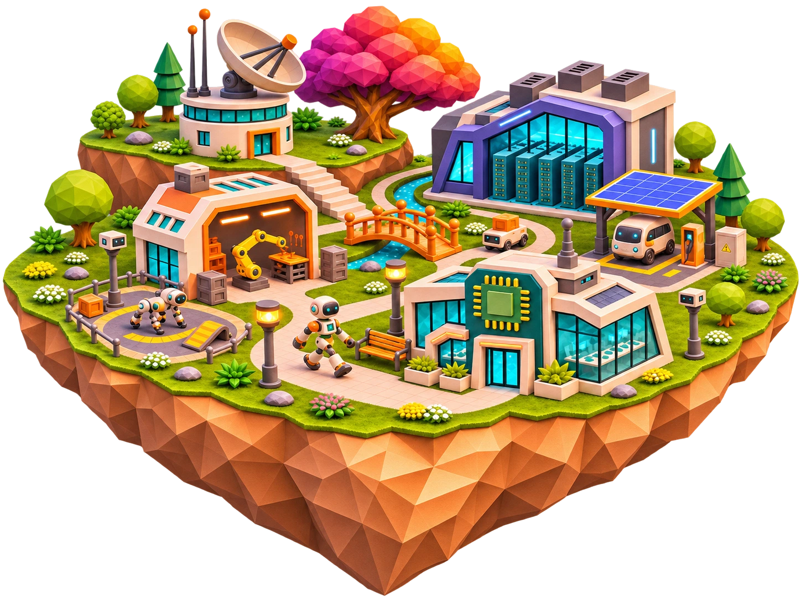

Telecommunications & Connectivity
A connected world of mobile networks, fiber links and satellites, bringing distant places closer.

Education
Ideas take root across libraries, classrooms, labs and shared spaces for curious minds.
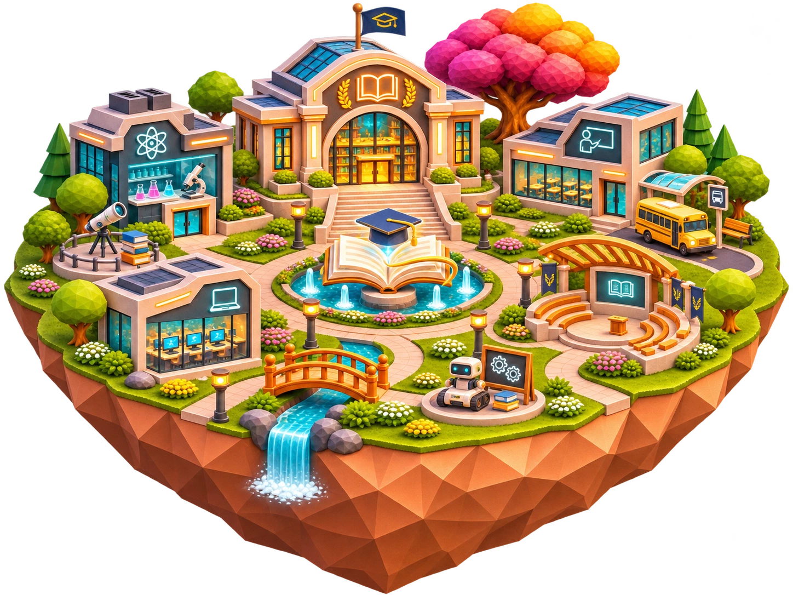

Manufacturing & Industrial
Where materials become machines, with robotics, precision tools and connected production.
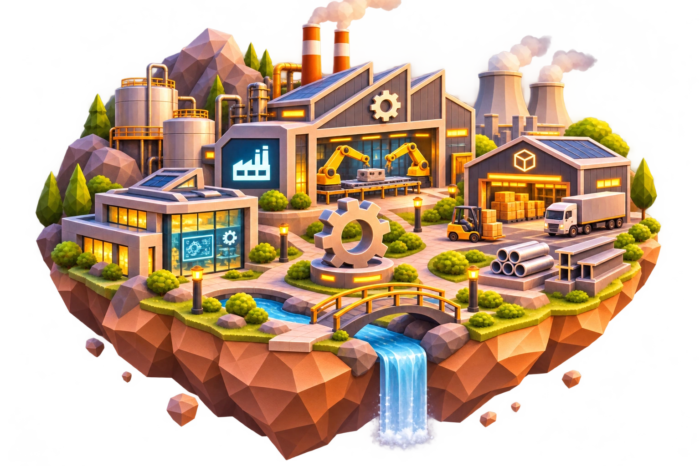

Healthcare & Life Sciences
A living world of care and discovery, bringing medicine, biology and nature together.
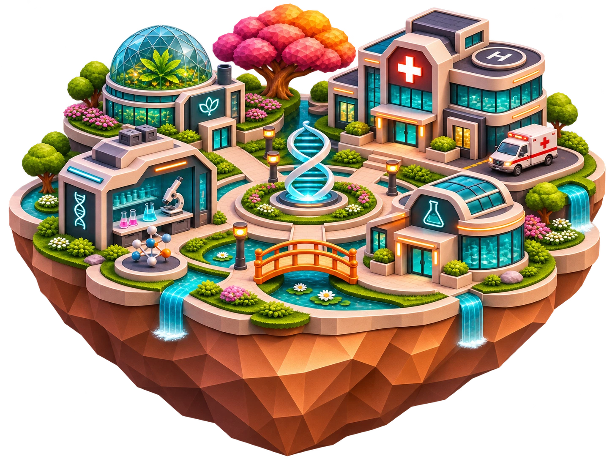

Consumer, Retail & Commerce
A lively district of shops, markets and cafés, connecting everyday discoveries with modern commerce.
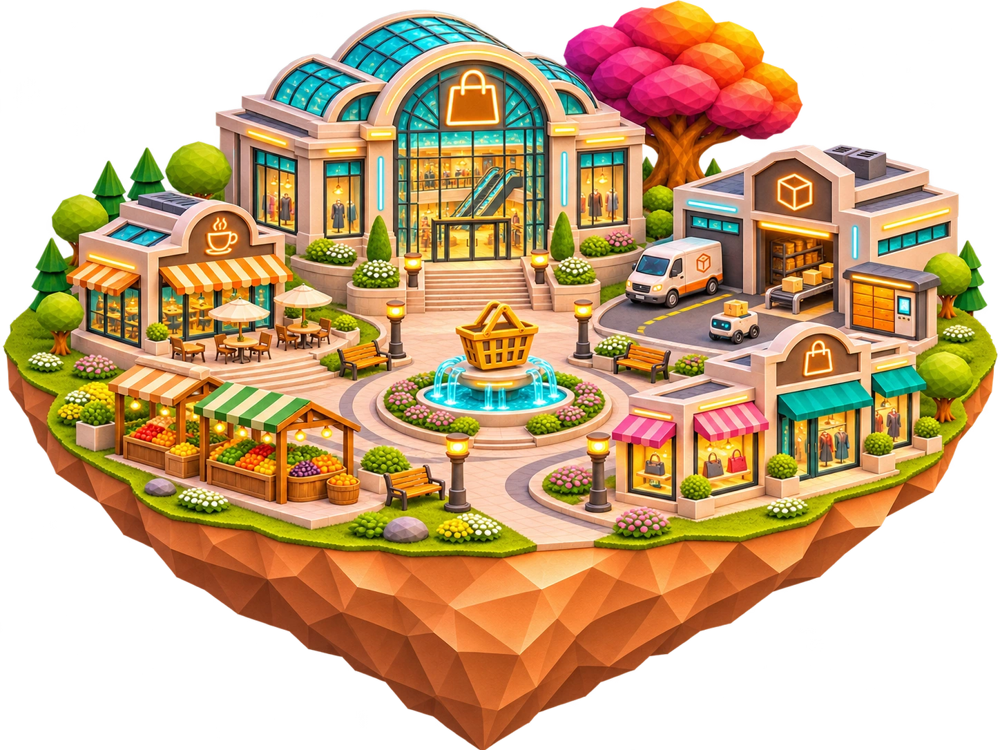

Science, Research & Innovation
A world of discovery, connecting scientific experiments, research and ideas that shape tomorrow.

Defense, Security & Public Protection
Preparedness and protection come together across defense, rescue and emergency response.

Agriculture, Food & Natural Resources
Fields, food and new farming ideas flourish side by side, from orchards to autonomous agriculture.
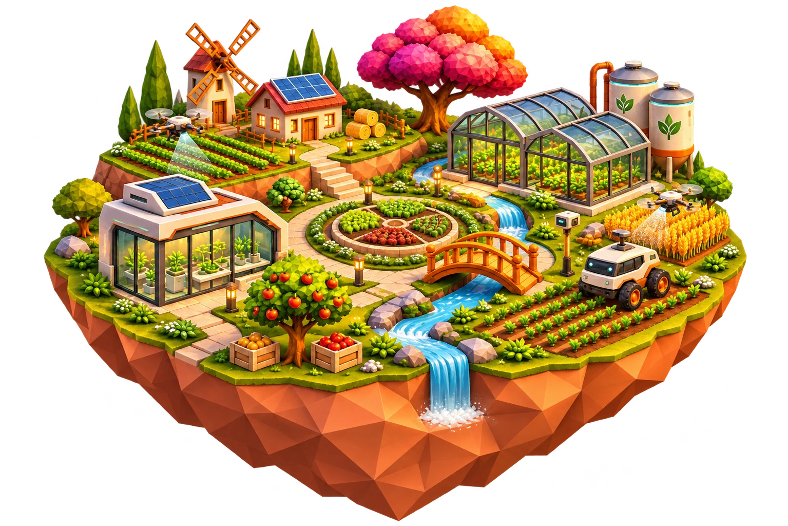

Professional & Business Services
A world of expertise, connecting business strategy, accounting, recruitment and shared success.


Energy, Climate & Environment
A world powered by sun, wind and water, connecting clean energy with care for the planet.
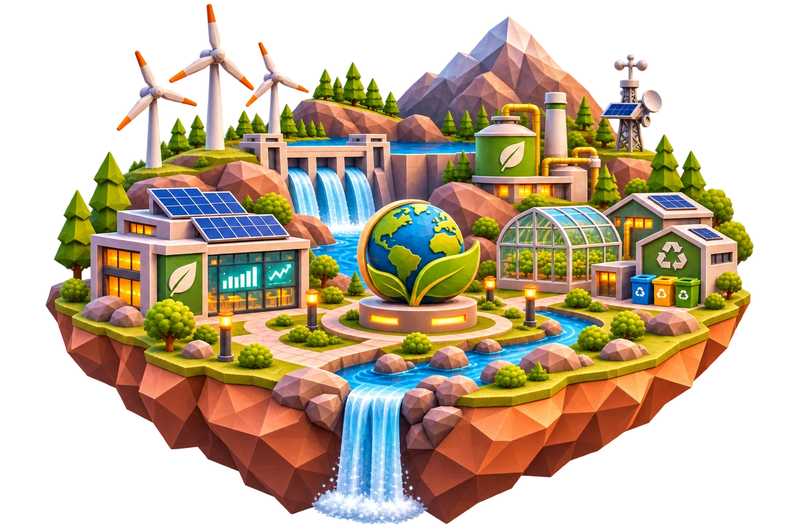

Nonprofit, Social Impact & Philanthropy
Global cooperation takes shape through humanitarian aid, community development and shared opportunity.


Media, Entertainment & Creative
Stories take shape across film sets, recording studios, art workshops and spaces for live performance.
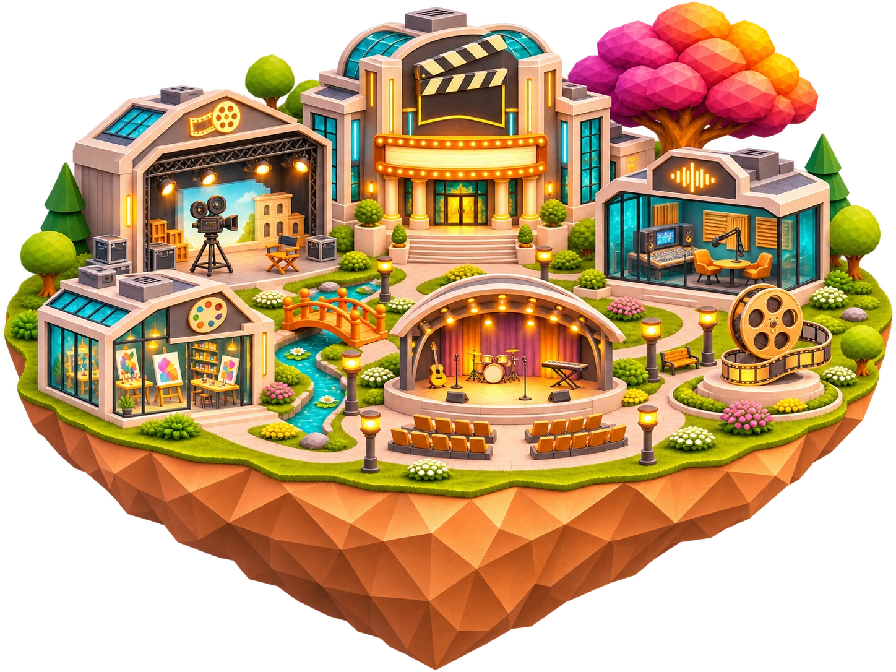